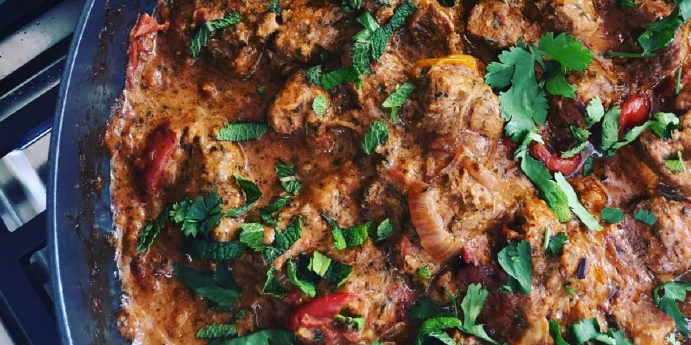

Lamb & Spinach Curry
Recipe Specification
Ingredients List
| Ingredients | Quantity |
|---|---|
| Vegetable Oil | 60ml |
| Root Ginger | 2 Inches |
| Garlic Cloves | 4 Cloves |
| White Onion | 4x1 |
| Ground Turmeric | 2 tsp |
| Cumin Powder | 30g |
| Coriander Powder | 30g |
| Chilli Powder | 2 tsp |
| Lamb Neck Fillet | 1.2kg |
| Tinned Chopped Tomatoes | 2x400g |
| Tomato Puree | 30g |
| Baby Spinach Leaves | 2x100g |
| Green Chillies | 3x1 |
| Salt & Pepper | To Season |
Yield: 4-6 portions
Preparation
- Peel and roughly cut ginger.
- Peel and crush garlic cloves.
- Peel and roughly cut onions.
- Finely slice green chillies.
- Wash and spin dry baby spinach.
- Cut lamb neck fillet into 1 inch cubes.
- Put onions, garlic and ginger in a food processor and blend until smooth. Add water to loosen if required.
Cooking Instructions
- Place a saucepan on a medium/high heat and add vegetable oil.
- Add onion paste, green chillies and half a teaspoon of salt to the pan and cook for 4-5 minutes.
- Add ground turmeric, ground cumin, ground coriander and chilli powder, stir and cook out spices for 3-4 minutes.
- Add cubed lamb and continually stir until meat has browned.
- Add Tomato puree, tinned tomatoes and 200ml of water before bringing to the boil and reducing to the simmer.
- Cover saucepan with lids and cook for 1-1½ hours until meat is tender.
- Add spinach leaves and cook for a further 5 minutes.
- Season to taste before serving.

Serving Suggestions
Lamb and spinach curry goes great with naan bread, roti and pilaf rice.
Storing instructions
Allow curry to cool to room temperature before putting in an air-tight container and placing in the refrigerator. Consume within 4 days of making it
Reheating Instructions
Place in the microwave for 2-3 minutes until piping hot.